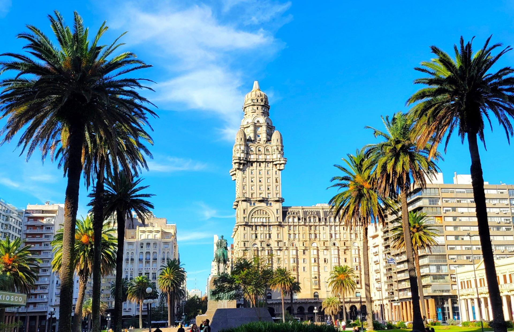
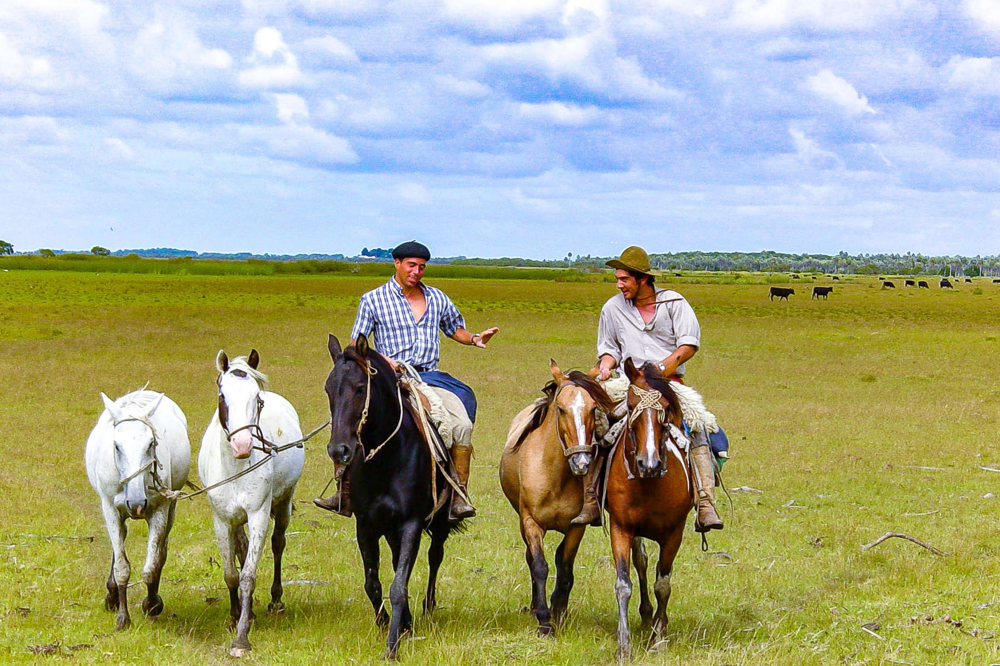
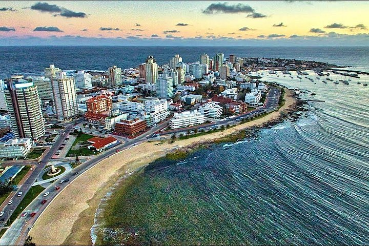
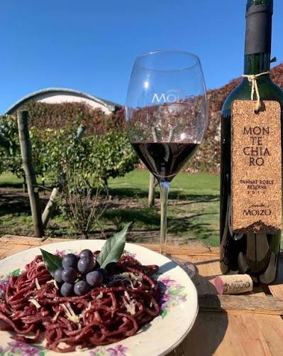
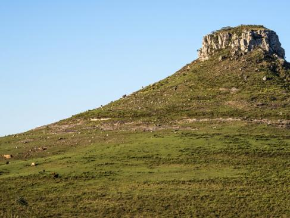

À la découverte d'un pays authentique
Montevideo et son patrimoine, Punta del Este et ses plages, immersion gaucho en estancia (cheval, asado), bodegas et Colonia del Sacramento UNESCO. Un circuit au cœur de l'Uruguay authentique, entre traditions gauchos, vignobles de Tannat et charme colonial.
Le voyage en un coup d'œil

🏛️ Montevideo
- Plazas & patrimoine
- Av. 18 de Julio & Rambla
- Musée du Tango & Palacio Taranco
- Marché du Port & Théâtre Solís

🐴 Estancia gaucho
- Chez Juan - Estancia Panagea
- Cheval au pas, gestion du bétail
- Asado au feu de bois
- Récits sous les étoiles

🏖️ Punta del Este
- Plages dorées & élégance
- Casapueblo (Carlos Páez Vilaró)
- Pain de Sucre & Punta Ballena
- Couchers de soleil légendaires

🍷 Bodegas & Tannat
- Bodega Moizo (Progreso)
- Bodega Los Pinos (Nueva Helvecia)
- Cépage Tannat, originaire de Madiran
- Dégustations & repas vignoble

🏛️ Colonia UNESCO
- Ville coloniale classée UNESCO
- Ruelles pavées & phare
- Real de San Carlos
- Charme intemporel sur le Río de la Plata

🎶 Tacuarembó
- Route via Florida & Durazno
- Paso de los Toros
- Musée Carlos Gardel
- Cerro Batoví
L'asado gaucho
3 nuits d'immersion dans l'estancia de Juan : ~1 000 vaches, ~2 000 moutons, centaine de chevaux. Monter comme un gaucho, gérer le bétail, savourer l'asado au feu de bois.
Votre itinéraire jour par jour
1ère semaine : Montevideo, Tacuarembó & Estancia
Arrivée à Montevideo
Installation à l'hôtel. Première découverte de la capitale uruguayenne.
Montevideo
Formalités. Av. 18 de Julio, Rambla, Palacio Salvo. Découverte du centre-ville et de ses places.
Vieille Ville
Plaza Matriz, Musée du Tango, Palacio Taranco, Plaza Independencia. Immersion dans le patrimoine montévidéen.
Vers Tacuarembó
Route via Florida, Durazno, Paso de los Toros. Musée Carlos Gardel. Arrivée dans la terre natale du tango.
Estancia gaucho
3 nuits d'immersion chez Juan - Estancia Panagea. Participation à la vie du ranch : cheval au pas, gestion du bétail (~1 000 vaches, ~2 000 moutons, centaine de chevaux), asado au feu de bois, récits sous les étoiles.
Vers Punta del Este
Route vers la côte. Installation à Punta del Este, perle balnéaire de l'Uruguay.
2ème semaine : Côte, Bodegas & Colonia
Punta del Este
Pain de Sucre, Casapueblo (Carlos Páez Vilaró), Punta Ballena. Élégance et couchers de soleil sur l'Atlantique.
Côte & plages
El Águila, Villa Argentina. Temps libre plage et détente au bord de l'océan.
Bodega Moizo
Visite et dégustation à la Bodega Moizo (Progreso). Repas au vignoble. Découverte du Tannat, cépage signature de l'Uruguay.
Vers Colonia
Route vers Colonia via Nueva Helvecia. Côte rioplatense. Installation dans la ville coloniale.
Colonia del Sacramento
Vieille ville UNESCO, Real de San Carlos, Fortaleza. Ruelles pavées et charme intemporel sur le Río de la Plata.
Bodega Los Pinos
Dégustation à la Bodega Los Pinos (Nueva Helvecia). Retour vers Montevideo.
Montevideo - Cerro & Palermo
Forteresse du Cerro avec vue panoramique. Palermo, Parc Rodó, Castillo Pittamiglio.
Montevideo - Marché & Théâtre
Marché du Port, Théâtre Solís, Pocitos / Ramírez. Dernières découvertes et shopping.
Départ
Temps libre. Transfert à l'aéroport Carrasco. Vol retour avec le tango dans le cœur et le Tannat dans les souvenirs.
Casapueblo à Punta Ballena
Œuvre de Carlos Páez Vilaró, sculptée dans la falaise face à l'Atlantique. Un coucher de soleil légendaire à Punta del Este.
Avant le départ & sur place
📄 Formalités
Passeport valide 6 mois après le retour. Pas de vaccins obligatoires.
🗣️ Langue & Décalage
Espagnol. Décalage horaire : -4h ou -5h (pas d'heure d'été en Uruguay).
💰 Monnaie
Peso uruguayen (UYU). Change aux casas de cambio. Pas à l'aéroport. Coût de la vie ≈ -15 % vs France.
🎒 Conseils pratiques
- Inclus : Tous les petits-déjeuners et déjeuners, 3 dîners
- Wi-Fi : Partout sauf à l'estancia
- Chaussures : Bonnes chaussures pour la ville et l'estancia
- Prises : 110/220V, normes UE présentes
- Répulsif : Anti-moustiques pour zones humides
Votre itinéraire sur la carte
De Montevideo à Colonia, en passant par l'estancia gaucho et Punta del Este : cliquez sur chaque point doré pour découvrir les étapes de votre voyage.
Bon séjour en Uruguay !
Le plus petit pays d'Amérique du Sud, le plus authentique. Construisons ensemble votre itinéraire sur mesure de 17 jours.
Parlons de votre projet →